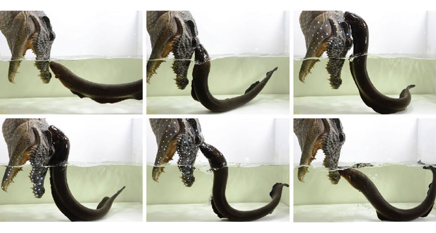

Electric eels play defense with a mighty leap
There are some pets that you just don’t pet. But that didn’t stop Philip Stoddard, a zoologist at Florida International University in Miami, from petting his pet electric eel Sparky. “It was so beautiful, I had to pet it,” he told Science News for Students. That was a big mistake, writes Roberta Kwok, because Sparky zapped Stoddard and left him with an arm that hurt for the next hour.
It could have been worse, though. When electric eels feel threatened by a large, land-based predator, they can leap out of the water in a high-voltage attack to ward off the invader, Kenneth Catania, a biologist a Vanderbilt University in Nashville, reports June 6 in the Proceedings of the National Academy of Sciences.
Catania isn’t the first scientist to report the leaping behavior. In 1807, German naturalist Alexander von Humboldt described seeing it on a trip to the Amazon in 1800. Humboldt had hired a group of local fishermen to collect electric eels for his research on the animals. The fishermen led about 30 horses and mules into a muddy pond, where eels then leapt up, pressing themselves against the large mammals and delivering a mighty shock. The fishermen were able to keep the horses they were using as eel bait in the pond by climbing into the trees and waving branches at them. Eventually the eels exhausted themselves and the fishermen were able to catch five of them. Two horses died.
Because no one else had ever seen such behavior, most scientists dismissed Humboldt’s account as a bunch of malarkey. But then Catania witnessed something odd while working with electric eels: When he reached into his eels’ cage with a large net that had a metallic rim and handle (he was wearing gloves), the eels would attack the net. “They swam rapidly toward the net, followed the metal rim to the point of exit from the water, and leaped upward along the rim and handle, keeping their chin in contact while discharging high-voltage volleys,” he writes in PNAS.
Catania hooked meters that measure voltage and amperage to an aluminum plate and let the eels leap. The higher a leap, the more voltage and amperage an eel produced. Getting high enough is key, it turns out, to effectively zapping an attacker. Once an eel gets high enough, the charge it delivers has no path back into the water (and the eel, completing the circuit) except through the target. So a high leap produces a big zap.
By lacing a fake arm and a plastic alligator head with LEDs, Catania was then able to visualize the effect of this attack: The higher an eel struck the target, the more LEDs lit up.
“Electric eels likely use an aggressive attack to defend themselves because they often cannot retreat,” Catania writes. During the dry season, eels may be stuck in small, muddy ponds where they don’t have any escape routes. And electrifying the water around them may not be enough to deter a large, terrestrial predator that has only a part of its body submerged. Attacking, in this case, may be the best option for defense.
Read More at ScienceNews